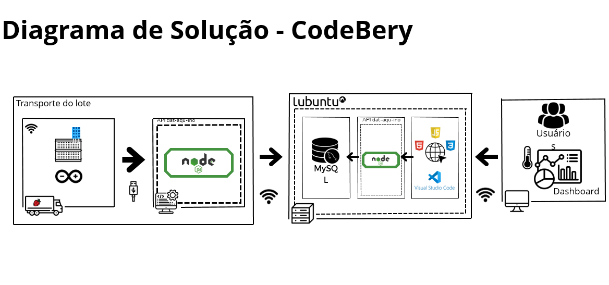

Nossa Solução Completa
Na Code Berry, desenvolvemos uma solução IoT completa que transforma o monitoramento da cadeia de frio de morangos, garantindo qualidade, redução de perdas e eficiência operacional em todas as etapas — do campo ao consumidor final. Nossa tecnologia combina sensores de alta precisão, capazes de medir temperatura e umidade com margem de erro de apenas ±0,1°C, com uma plataforma de análise em tempo real que oferece visibilidade total sobre as condições de transporte.
Com alertas inteligentes e relatórios automatizados, você pode agir rapidamente diante de qualquer variação fora dos parâmetros ideais (0°C a 1°C e 90-95% de umidade), evitando perdas e garantindo que cada morango chegue ao destino com frescor e qualidade premium. Nossa solução já ajudou produtores e transportadoras a reduzirem desperdícios em até 70%, aumentar a vida útil dos frutos em 40% e obter retorno sobre o investimento em apenas três meses.
Além do monitoramento em tempo real, oferecemos integração simples com sistemas de gestão agrícola e relatórios completos para compliance com as normas da ANVISA e MAPA. Com algoritmos preditivos, nossa plataforma não só identifica problemas, mas também prevê riscos antes que ocorram, transformando dados em decisões estratégicas para o seu negócio.
Na Code Berry, entregamos mais do que tecnologia — entregamos tranquilidade, eficiência e resultados comprovados para toda a cadeia produtiva de morangos. Garanta o frescor da sua carga, reduza custos e aumente a satisfação dos seus clientes com uma solução desenvolvida para atender às necessidades reais do setor.
Tecnologia certificada, resultados comprovados.📊 Nosso Modelo de Negócio
Veja como nossa solução se integra em toda a cadeia logística:
⭐ Por que escolher a Code Berry?
🔄 Redução de Perdas
Diminua em até 70% as perdas por más condições de transporte com nossos alertas em tempo real.
📱 Monitoramento 24/7
Acesse dados de temperatura e umidade de qualquer lugar via dashboard intuitivo.
💸 ROI Comprovado
Retorno sobre investimento em menos de 3 meses para produtores de médio porte.
🛠 Tecnologia Utilizada
- ✔ Sensores de precisão DHT11 (±0.5°C)
- ✔ Plataforma em nuvem com histórico de 12 meses
- ✔ Alertas via SMS, e-mail e app
- ✔ Integração com sistemas de gestão agrícola
⏳ Implementação em 3 Passos
Instalação Rápida
Nossa equipe instala os sensores em 1 dia
✔ Sensores ✔ Gateway ✔ TestesTreinamento
4 horas para capacitar sua equipe
✔ Dashboard ✔ Alertas ✔ RelatóriosMonitoramento Ativo
Resultados visíveis desde a primeira viagem
✔ Suporte 24/7 ✔ Ajustes finos